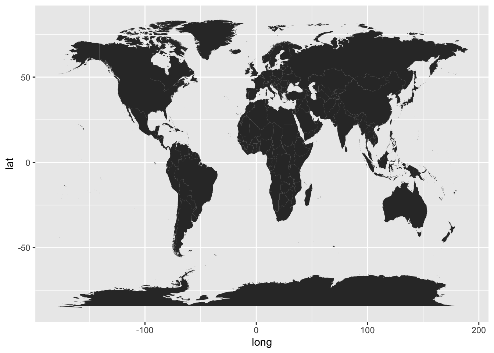
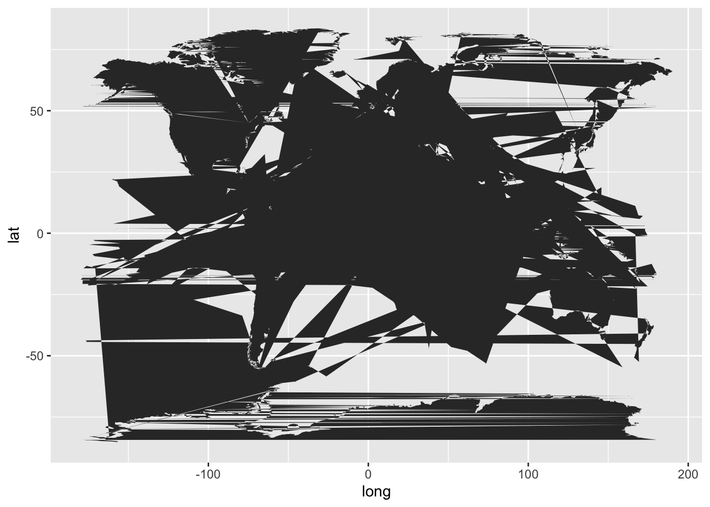
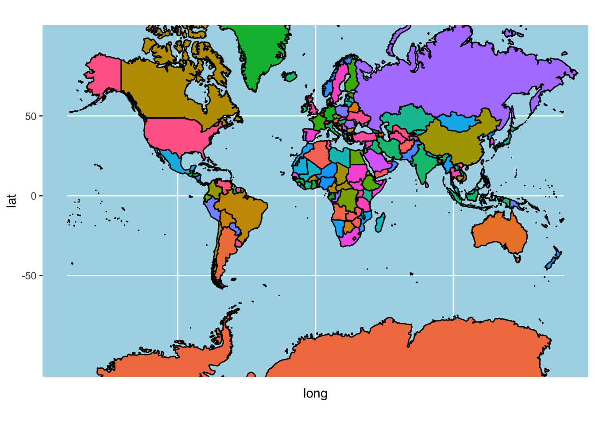
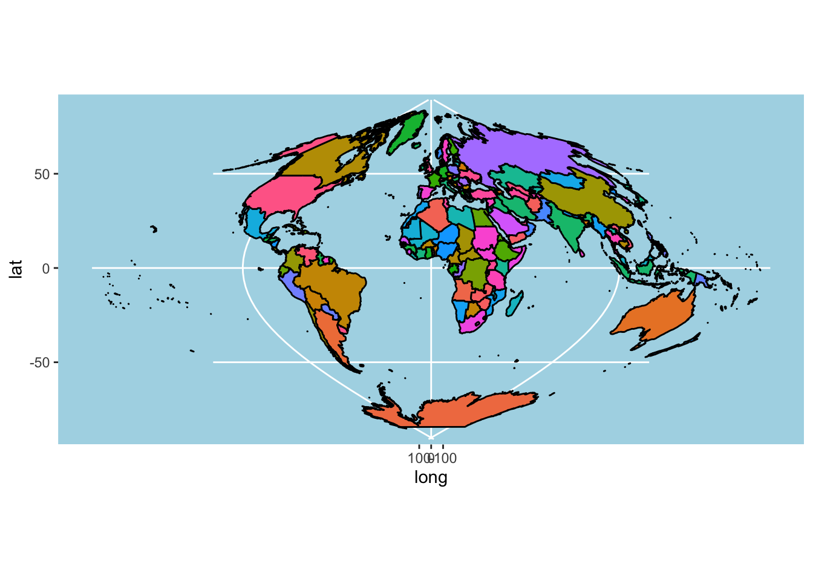
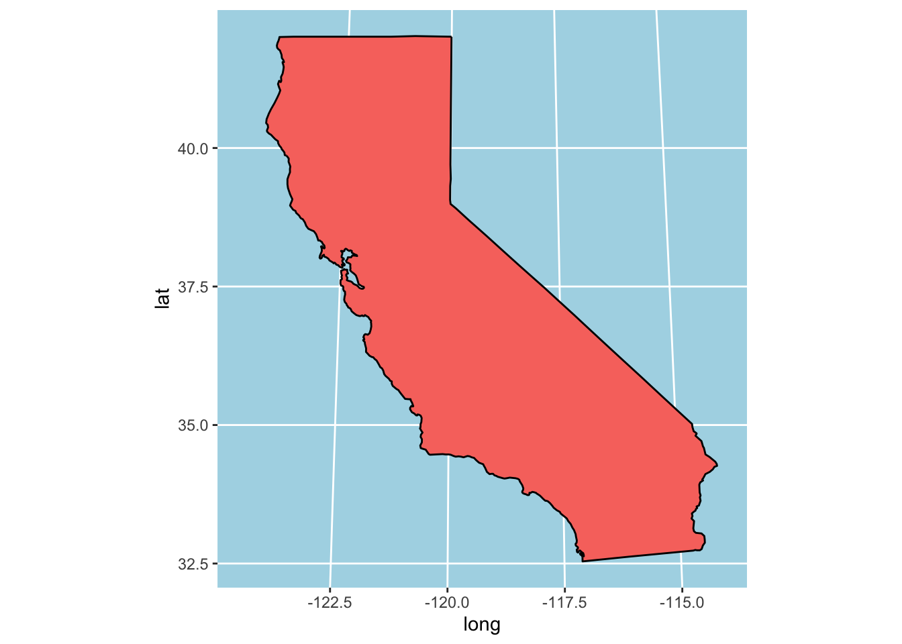
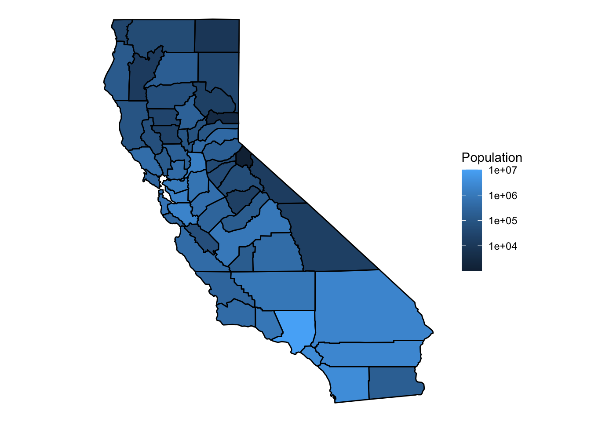
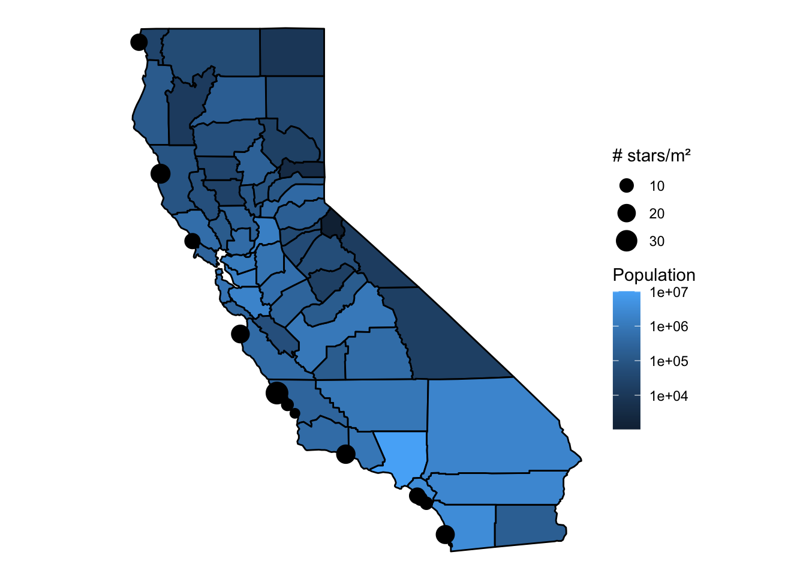
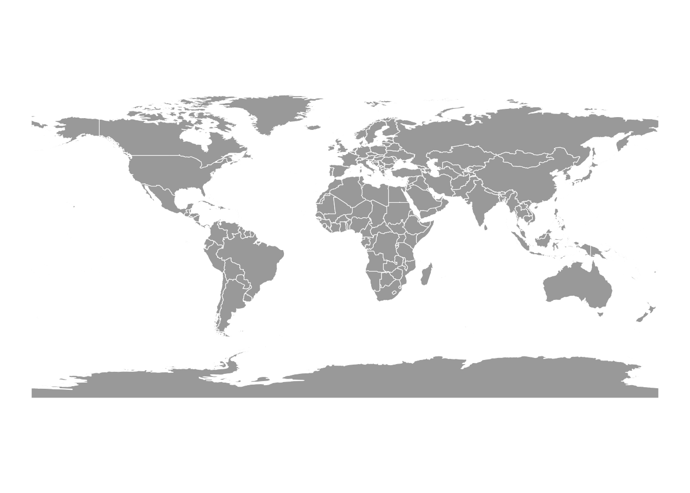
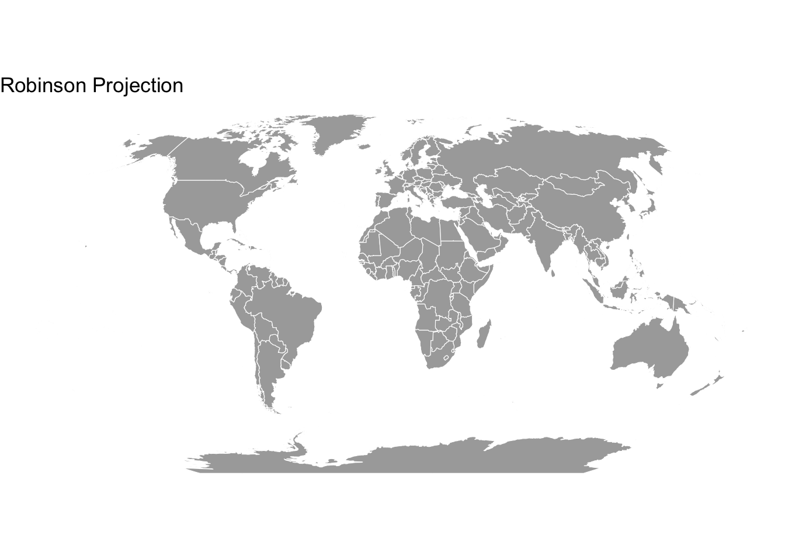

show code
#installed the maps packages in console
library(tidyverse)
library(here)
library(maps)
library(mapdata)
library(mapproj)Please view the code chunks.
This classwork activity will be focusing on MAPPING. The main purpose is:
create a map
plot a map
understand the features and functions for each code to develop the maps
All codes are located in code chunks, so this is definitely reproducible. Have fun to my future self and to whoever wants to use this for practice. Hope it helps!
Lets load our libraries first and foremost. We need the necessary packages to be able to run our codes.
#installed the maps packages in console
library(tidyverse)
library(here)
library(maps)
library(mapdata)
library(mapproj)In this report, we will look at the population in California by county through the popdata from the CApopdata.csv file. In addition to looking at the population data, we will look at how many seastars were observed within these counties.
# Population in California by county
popdata <- read_csv(here("Week_07", "data", "CApopdata.csv"))
# Seastar counts at field sites in California
stars <- read_csv(here("Week_07", "data", "stars.csv"))world <- map_data("world")
head(world) long lat group order region subregion
1 -69.89912 12.45200 1 1 Aruba <NA>
2 -69.89571 12.42300 1 2 Aruba <NA>
3 -69.94219 12.43853 1 3 Aruba <NA>
4 -70.00415 12.50049 1 4 Aruba <NA>
5 -70.06612 12.54697 1 5 Aruba <NA>
6 -70.05088 12.59707 1 6 Aruba <NA>Now that we have imported the data into this file, lets up our game and separate them by map, country, states, and counties. The next few code chunks will look at the map data.
#map in USA
usa <- map_data("usa")
head(usa) long lat group order region subregion
1 -101.4078 29.74224 1 1 main <NA>
2 -101.3906 29.74224 1 2 main <NA>
3 -101.3620 29.65056 1 3 main <NA>
4 -101.3505 29.63911 1 4 main <NA>
5 -101.3219 29.63338 1 5 main <NA>
6 -101.3047 29.64484 1 6 main <NA>italy <- map_data("italy")
head(italy) long lat group order region subregion
1 11.83295 46.50011 1 1 Bolzano-Bozen <NA>
2 11.81089 46.52784 1 2 Bolzano-Bozen <NA>
3 11.73068 46.51890 1 3 Bolzano-Bozen <NA>
4 11.69115 46.52257 1 4 Bolzano-Bozen <NA>
5 11.65041 46.50721 1 5 Bolzano-Bozen <NA>
6 11.63282 46.48045 1 6 Bolzano-Bozen <NA>states <- map_data("state")
head(states) long lat group order region subregion
1 -87.46201 30.38968 1 1 alabama <NA>
2 -87.48493 30.37249 1 2 alabama <NA>
3 -87.52503 30.37249 1 3 alabama <NA>
4 -87.53076 30.33239 1 4 alabama <NA>
5 -87.57087 30.32665 1 5 alabama <NA>
6 -87.58806 30.32665 1 6 alabama <NA>counties <- map_data("county")
head(counties) long lat group order region subregion
1 -86.50517 32.34920 1 1 alabama autauga
2 -86.53382 32.35493 1 2 alabama autauga
3 -86.54527 32.36639 1 3 alabama autauga
4 -86.55673 32.37785 1 4 alabama autauga
5 -86.57966 32.38357 1 5 alabama autauga
6 -86.59111 32.37785 1 6 alabama autaugaNow lets take it up another notch and plot our map. Treat this section just like how you treat your basic plots. In this section we will focus on:
Create basic map using the group = group function
Create basic map without the group = group function
Color our basic map with different themes and use two types of projections (mercator and sinusoidal) to compare the the two map visuals.
#group - Points in the same group get connected; different groups cause ggplot to “lift the pen.”
# without using the group = group in aesthetic is the #1 cause of "crazy line" plots
# using group = group in geom to set every point in geom. do not use in ggplot only in geom_polygon
#make a map
#| label: fig-test1
#| fig-cap: "Basic map of the whole world in 2D"
#| fig-align: "center"
ggplot() +
geom_polygon(data = world,
aes(x = long, y = lat,
group = group))
#without group = group
#| label: fig-test2
#| fig-cap: "Basic map of the whole world in 2D without using the group function"
#| fig-align: "center"
ggplot() +
geom_polygon(data = world,
aes(x = long, y = lat))
#treat this map as a regular plot where we can color code
#add color to lines and fill
#| label: fig-test3
#| fig-cap: "Basic map of the whole world in 2D with colors and using the mercator projection"
#| fig-align: "center"
ggplot() +
geom_polygon(data = world,
aes(x = long, y = lat,
group = group,
fill = region), #fill by region
color = "black") +
guides(fill = "none") + #this removes legend
theme(panel.background =
element_rect(fill = "lightblue")) + #change theme
coord_map(projection = "mercator", xlim = c(-180, 180)) #change map projection; xlim looks at the x axis and tells it look from -180 deg to 180 deg
#| label: fig-test4
#| fig-cap: "Basic map of the whole world in 2D with colors and using the sinusoidal projection"
#| fig-align: "center"
ggplot() +
geom_polygon(data = world,
aes(x = long, y = lat,
group = group,
fill = region), #fill by region
color = "black") +
guides(fill = "none") + #this removes legend
theme(panel.background =
element_rect(fill = "lightblue")) + #change theme
coord_map(projection = "sinusoidal", xlim = c(-180, 180)) #change map projection; xlim looks at the x axis and tells it look from -180 deg to 180 deg; sinusodial projection - circular 
This classwork activity will be looking at the map of California by population, counties and seastars observed. Follow the code chunks to be able to reproduce something similar if interested.
#class activity
#make map of California
CA_data <- states |> #rename the states data to only look at California
filter(region == "california") # good to separate this code and the ggplot code#ggplot data
ggplot() +
geom_polygon(data = CA_data,
aes(x = long, y = lat,
group = group,
fill = "county"),
color = "black") +
guides(fill = "none") +
theme(panel.background =
element_rect(fill = "lightblue")) + #change theme
coord_map(projection = "sinusoidal") 
#theme_void removes the background, but we want a nice looking background so we are using a background We have our basic map, now lets be creative and add more layers such as counties and population.
#add multiple layers of data
#plotting population of every county in Cali by getting county-level polygons and joining to population data
head(counties) long lat group order region subregion
1 -86.50517 32.34920 1 1 alabama autauga
2 -86.53382 32.35493 1 2 alabama autauga
3 -86.54527 32.36639 1 3 alabama autauga
4 -86.55673 32.37785 1 4 alabama autauga
5 -86.57966 32.38357 1 5 alabama autauga
6 -86.59111 32.37785 1 6 alabama autaugahead(popdata)# A tibble: 6 × 2
County Population
<chr> <dbl>
1 los angeles 10081570
2 san diego 3316073
3 orange 3168044
4 riverside 2411439
5 san bernardino 2149031
6 santa clara 1927470#we need to join our pop data and our county data (rename county to subregion to match pop data to make it easier to join)
CApop_county <- popdata |>
select("subregion" = County, Population) |> # rename to match counties
inner_join(counties) |>
filter(region == "california") # some county names repeat in other states
head(CApop_county)# A tibble: 6 × 7
subregion Population long lat group order region
<chr> <dbl> <dbl> <dbl> <dbl> <int> <chr>
1 los angeles 10081570 -119. 34.8 175 7827 california
2 los angeles 10081570 -118. 34.8 175 7828 california
3 los angeles 10081570 -118. 34.8 175 7829 california
4 los angeles 10081570 -118. 34.6 175 7830 california
5 los angeles 10081570 -118. 34.6 175 7831 california
6 los angeles 10081570 -118. 34.5 175 7832 california#now we plot!!
ggplot() +
geom_polygon(data = CApop_county,
aes(x = long, y = lat,
group = group,
fill = Population),
color = "black") +
theme_void() + #change theme
coord_map(projection = "sinusoidal") +
scale_fill_gradient(transform = "log10") # compresses the color scale so less populated counties are still visible
Beautiful! but lets add another layer to test and see how it would look like. This portion will overlay the seastar observed data collected in California. Lets load and view the stars.
#lets add another layer
#look at the seastar counts per sqaure meters at field sites in California
head(stars)# A tibble: 6 × 3
lat long star_no
<dbl> <dbl> <dbl>
1 33.5 -118. 10
2 35.5 -121. 1
3 39.5 -124. 25
4 32.9 -117. 22
5 33.5 -118. 8
6 33.5 -118. 3TA-DA!! We created a plot similar to our basic Califoria map but now with more data plotted onto it.
#lets overlay the seastar sites
ggplot () +
geom_polygon(data = CApop_county,
aes(x = long, y = lat,
group = group,
fill = Population),
color = "black") +
geom_point(data = stars,
aes(x = long,
y = lat,
size = star_no)) + #size points by seastar count
coord_map() +
theme_void() +
scale_fill_gradient(transform = "log10") +
labs(size = "# stars/m²")
ggsave(here("Week_07", "output", "CApop.pdf"))This section will just highlight that sf() (simple features) package. This is a package that we will need, if we are working with spatial data. This function will handle our spatial data and will specify it in simple formats, allowing us to be able to use dplyr with it. This function will come in the forms of geom_sf() and coord_sf().
#installed sf package in console
#sf does not need to use the group = group function
library(sf)
library(rnaturalearth)
library(rnaturalearthdata)
world_sf <- ne_countries(scale = "medium",
returnclass = "sf")
ggplot(world_sf) +
geom_sf(fill = "darkgray",
color = "white") +
theme_void()
#coord_sf fxn handles projections using standard EPSG codes - much more rigorous than {mapproj}
# governs the map projection
#Robinson projection is a common course
ggplot(world_sf) +
geom_sf(fill = "darkgray", color = "white") +
coord_sf(crs = "+proj=robin") + # Robinson projection
theme_void() +
labs(title = "Robinson Projection")
Classwork activity done! Hope this is helpful to future me and to others seeing this.